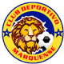
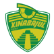

La Liga Nacional de Fútbol de Guatemala (Conocido por motivos de patrocinio como Liga Guate Banrural)
es la máxima categoría del fútbol profesional en Guatemala. El campeonato tuvo sus inicios en 1919,
algunos historiadores consideran como precursora a la Liga Capitalina, aunque en ese mismo año existía
el Campeonato Nacional, que enfrentaba a equipos o combinados nacionales para determinar al campeón
nacional,[2]además desde 1931, el campeón de la Liga Capitalina competía en el Campeonato de la
República con los campeones de las ligas de los departamentos de Guatemala, definiendo al campeón
nacional;[3]en 1942 se profesionalizó pasándose a llamar Campeonato de Liga.
Sistema de Competicion
A partir del Torneo Apertura 2023, se realizó un cambio al formato de competencia,[6]
reduciendo el número de jornadas de 22 a 16 y la cantidad de partidos de 132 a 96,
quedando así dividido el torneo en dos partes:
Fase de clasificación: Formado por los 96 partidos en las 16 jornadas disputadas.
Fase final: Cuartos de final, semifinales y final
Fase de Clasificacion
Los 12 equipos participantes se dividen en dos grupos de seis equipos cada uno.
Dentro de cada grupo, los equipos jugarán todos contra todos a visita recíproca
a lo largo de 10 fechas; tras finalizar esas 10 fechas, se jugarán otros 6 partidos,
cada equipo jugará un partido contra cada uno de los seis equipos que forman parte
del grupo opuesto al suyo, jugando tres partidos de local y tres partidos de visitante.[7
Lo anterior se contabiliza en 16 fechas de 6 partidos cada una, para un total de 96 partidos
clasificatorios. Se utiliza un sistema de puntos, que se presenta así:
Por victoria, se obtendrán 3 puntos.
Por empate, se obtendrá 1 punto.
Por derrota no se obtendrán puntos.
Los partidos que conformen cada fecha, así como el
orden de estos serán definidos por sorteo antes de comenzar la competición.
Al finalizar las 16 jornadas, se obtendrá una tabla general
unificando las estadísticas de ambos grupos, la tabla se ordenará
con base en los clubes que hayan obtenido la mayoría de puntos, en
caso de empates, se toman los siguientes criterios:
Puntos
Puntos obtenidos entre los equipos empatados
Diferencial de goles
Goles anotados
Goles anotados en condición visitante.
Fase final
Los ocho primeros equipos en la tabla final clasifican a cuartos de final; se enfrentan de la
siguiente manera:
1.º vs 8.º
2.º vs 7.º
3.º vs 6.º
4.º vs 5.º
Los equipos ganadores clasificarán a las semifinales. Los clubes vencedores en los
partidos de cuartos de final y semifinales serán aquellos que en los dos juegos anoten el
mayor número de goles. De existir empate en el número de goles anotados, existirá una prórroga
y en caso de persistir el empate, se definirá en una tanda de penales.
Para la temporada 2022/23, ha cambiado el método de clasificación en la fase final.
Los ganadores de las semifinales se enfrentarán en la Gran Final, disputándose a ida y vuelta, el mejor clasificado entre los finalistas jugará el último partido en su estadio.
Equipos de fútbol
Achuapa
Antigua
Malacateco

Marquense
Coban Imperial
Comunicaciones
Municipal
Xelaju
Deportivo Mixco
Guastatoya

Xinabajul
Zacapa
Achuapa
El Club Deportivo Achuapa, es un equipo
guatemalteco de fútbol con sede en el Municipio de
El Progreso, del Departamento de Jutiapa. Actualmente
compite en la Liga Nacional de Guatemala, Juega sus partidos
de local en el Estadio Winston Pineda
Antigua
El Club Deportivo Antigua, G. F. C., también conocido como
Antigua Guatemala o simplemente Antigua GFC, es un equipo de
fútbol profesional con sede en La Antigua Guatemala, Guatemala.
Juegan sus partidos de local en el Estadio Pensativo
Comunicaciones
El Comunicaciones Fútbol Club, conocido simplemente
como Comunicaciones, es un club de fútbol guatemalteco
con sede en la Ciudad de Guatemala.
Deportivo Mixco
El Deportivo Mixco, también conocido como
"Los Chicharroneros", es un club de fútbol
guatemalteco de la Ciudad de Mixco, en el
Departamento de Guatemala. Fue fundado en 1964
Guastatoya
El Club Deportivo Guastatoya es un equipo de fútbol de Guatemala que
juega en la Liga Nacional de Guatemala, la liga de fútbol más
importante del país. Se coronó campeón de la Liga Nacional de
Guatemala en el Torneo Clausura 2018, Torneo Apertura 2018 y en
el Torneo Apertura 2020 del fútbol guatemalteco.
Guastatoya
El Club Deportivo Guastatoya es un equipo de fútbol de Guatemala que
juega en la Liga Nacional de Guatemala, la liga de fútbol más
importante del país. Se coronó campeón de la Liga Nacional de
Guatemala en el Torneo Clausura 2018, Torneo Apertura 2018 y en
el Torneo Apertura 2020 del fútbol guatemalteco.
Malacateco
El Club Deportivo Malacateco es un club de fútbol de Guatemala con sede
en Malacatán, San Marcos. El club fue fundado el 8 de
septiembre de 1962, actualmente juega en la Liga Nacional de
Guatemala. Disputa sus partidos como local en el Estadio Santa Lucía.
Marquense
El Club Deportivo Marquense es un club de fútbol de
Guatemala del departamento de San Marcos. Fue fundado en
abril de 1958 y actualmente juega en la Liga Nacional de
Fútbol de Guatemala.
Municipal
El Club Social y Deportivo Municipal es un
club de fútbol de la Ciudad de Guatemala.
Fue fundado el 17 de mayo de 1936 y actualmente
compite en la Liga Nacional de Guatemala donde
juega sus partidos de local en el Estadio Manuel
Felipe Carrera.
Xelaju
El Club Social y Deportivo Xelajú Mario Camposeco,
conocido simplemente como Xelajú Mario Camposeco,
es el club más grande a nivel departamental y considerado
el equipo con la mejor afición de Guatemala, ubicados
en la ciudad de Quetzaltenango.
Xinabajul
El Club Social y Deportivo Xinabajul Huehue es un equipo de fútbol
de Guatemala con sede en Huehuetenango. Fue fundado en 1980.
El club había intentado varias veces el ascenso a la Liga
Nacional sin lograrlo hasta que ganó la final de la Primera
División al equipo de Universidad de San Carlos.
Zacapa
El Deportivo Zacapa fue un club de fútbol de Guatemala del departamento
de Zacapa. Fue fundado el 14 de noviembre de 1951. Descendió a la segunda
división en 2015 y con no contar con los recursos para seguir sosteniendo
al equipo el club estuvo fuera de operaciones unos años.